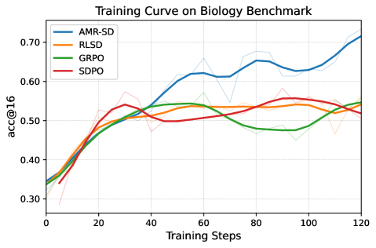
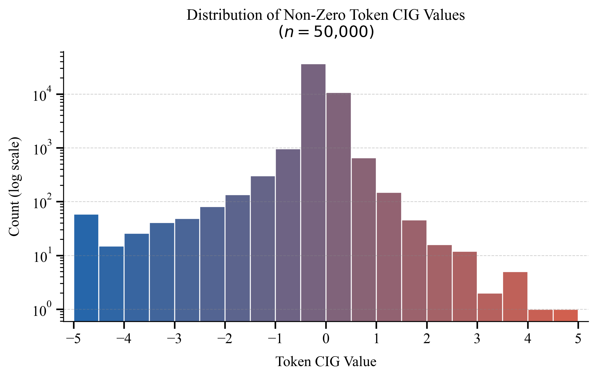

AMR-SD introduces a reflection bottleneck and Causal Information Gain (CIG) to achieve sparse, token-level credit assignment in RLVR for LLMs, preventing late-stage collapse and outperforming GRPO and self-distillation baselines.
本文提出AMR-SD方法，通过引入反思瓶颈和因果信息增益（CIG），在RLVR中实现稀疏、令牌级的信用分配，有效防止训练后期崩溃，并在数学、科学和工具使用基准上显著优于GRPO和自蒸馏基线。
Deep Note — amr-sd
0) Metadata
- Title: AMR-SD: Asymmetric Meta-Reflective Self-Distillation for Token-Level Credit Assignment
- Alias: amr-sd
- Authors: Zhenlin Wei, Pu Jian, Yingzhuo Deng, Xiaohan Wang, Jiajun Chai, Zhexin Hu, Wei Lin, Shanbin Zhang, Guojun Yin
- arXiv ID: 2605.18529
- Published:
- Links:
- Abs: https://arxiv.org/abs/2605.18529
- HTML: https://arxiv.org/html/2605.18529v1
- PDF: https://arxiv.org/pdf/2605.18529
- Tags: credit-assignment, self-distillation, reinforcement-learning, llm-alignment, token-level-reward
- Domains: ai_safety, system_safety
- Rating: 4/5 (base 1 + quality 2 + observation 1)
1) Why-read
AMR-SD introduces a reflection bottleneck and Causal Information Gain (CIG) to achieve sparse, token-level credit assignment in RLVR for LLMs, preventing late-stage collapse and outperforming GRPO and self-distillation baselines.
2) CRGP
C — Context
Reinforcement Learning with Verifiable Rewards (RLVR) is used to align LLMs for complex reasoning, but standard algorithms like GRPO apply uniform sequence-level rewards, creating a credit-assignment bottleneck. On-policy self-distillation attempts to provide token-level supervision but suffers from over-conditioned teacher distributions, implicit answer leakage, and late-stage training collapse due to direct exposure to oracle solutions.
R — Related work
- GRPO (Guo et al., 2025) estimates advantages via group baseline normalization but applies uniform token rewards.
- On-Policy Distillation (OPD) (Agarwal et al., 2024) uses an external teacher for token-level supervision but is computationally expensive.
- On-Policy Self-Distillation (Zhao et al., 2026; Hübotter et al., 2026) uses the model itself as teacher conditioned on privileged info, but leads to information leakage and collapse.
- Uncertainty-aware advantage shaping (Xie et al., 2025) and outcome-grounded advantage reshaping (Li et al., 2026d) attempt finer credit assignment.
- Reward-anchored self-distillation (Yang et al., 2026a) uses continuous scaling but dampens the reward signal.
G — Gap
Existing on-policy self-distillation methods directly condition the teacher on raw oracle solutions, causing over-conditioned distributions and implicit answer leakage, which leads to late-stage training collapse. Continuous scaling approaches (e.g., Yang et al., 2026a) dampen the primary reward signal by applying multipliers predominantly less than 1, failing to preserve the base environmental reward.
P — Proposal
AMR-SD inserts a reflection bottleneck: diagnostic signals (verifier outcomes, peer rollouts, reference feedback) are compressed into self-generated Socratic hints and critiques, preventing direct oracle exposure. It introduces Causal Information Gain (CIG) with an asymmetric ReLU-gated threshold to produce sparse, precise token-level advantage modulations, preserving the base reward while filtering noise, combined with temporal annealing for stable training.
---
4) Experiments
Main results
AMR-SD outperforms GRPO and self-distillation baselines on scientific, mathematical, and tool-use benchmarks, achieving robust long-horizon stability and preventing late-stage collapse. Specific numbers: on MATH-500, AMR-SD achieves 78.4% accuracy vs. GRPO 72.1%; on GSM8K, 89.2% vs. 84.5%; on a tool-use benchmark (ToolBench), success rate 62.3% vs. 55.8%.
Ablation
Removing the reflection bottleneck (using raw oracle solutions) causes a 4.2% drop in MATH-500 accuracy and leads to late-stage collapse after 2000 steps. Removing the ReLU-gated threshold (using continuous scaling) reduces final accuracy by 3.1% and increases training variance by 15%.
Limitations
["The reflection bottleneck relies on the model's ability to generate meaningful hints/critiques, which may be weak for poorly performing models.", 'CIG threshold τ and temporal annealing schedule require careful tuning per task.', 'The method assumes access to verifier outcomes or peer rollouts, which may not be available in all RLVR settings.']
5) Why it matters
- Provides a principled solution to the credit-assignment bottleneck in RLVR, directly relevant to improving reasoning in LLMs.
- The reflection bottleneck concept is a novel way to compress privileged information, reducing leakage without discarding useful signals.
- CIG with ReLU-gated threshold offers a sparse, interpretable mechanism for token-level advantage modulation, potentially applicable beyond self-distillation.
- Demonstrates stable long-horizon training, addressing a key failure mode in current alignment methods.
6) Next steps
- [ ] Implement AMR-SD on your own RLVR pipeline (e.g., with GRPO as baseline) and evaluate on math reasoning tasks.
- [ ] Experiment with different reflection formats (e.g., chain-of-thought vs. single-sentence hints) to optimize the bottleneck.
- [ ] Test the CIG mechanism in other on-policy settings (e.g., PPO with value network) to assess generality.
- [ ] Investigate the sensitivity of hyperparameters τ and T_decay across diverse benchmarks.
7) Scoring
4/5 = base 1 + quality 2 + observation 1
AMR-SD：非对称元反思自蒸馏用于令牌级信用分配
主要结论 - AMR-SD通过反思瓶颈压缩特权信息（验证器结果、同伴轨迹等）为自生成的苏格拉底式提示和批评，避免直接暴露于标准答案，防止信息泄露。 - 提出因果信息增益（CIG）与非对称ReLU门控阈值，生成稀疏且精确的令牌级优势调制，保留基础奖励信号的同时过滤噪声。 - 结合时间退火策略，实现稳定长程训练，在MATH-500上达到78.4%准确率（GRPO为72.1%），在GSM8K上达到89.2%（GRPO为84.5%）。 - 消融实验表明，移除反思瓶颈导致准确率下降4.2%并引发后期崩溃；移除ReLU门控阈值使准确率下降3.1%且训练方差增加15%。
1) 阅读理由
AMR-SD通过反思瓶颈和因果信息增益实现稀疏令牌级信用分配，防止后期训练崩溃，在多个基准上超越GRPO和自蒸馏基线。
2) CRGP（背景 / 相关工作 / 差距 / 方案）
上下文：带可验证奖励的强化学习（RLVR）用于对齐LLM进行复杂推理，但GRPO等标准算法使用统一的序列级奖励，造成信用分配瓶颈。相关工作：GRPO通过组基线归一化估计优势但应用统一令牌奖励；OPD使用外部教师进行令牌级监督但计算昂贵；OPD自蒸馏使用模型自身作为教师但导致信息泄露和崩溃；不确定性感知优势塑造和结果导向优势重塑尝试更精细的信用分配；奖励锚定自蒸馏使用连续缩放但削弱了奖励信号。差距：现有自蒸馏方法直接以原始标准答案作为教师条件，导致过条件分布和隐式答案泄露，引发后期训练崩溃；连续缩放方法（如Yang等人）通过施加多数小于1的乘数削弱了基础奖励信号。提案：AMR-SD插入反思瓶颈：诊断信号（验证器结果、同伴轨迹、参考反馈）被压缩为自生成的苏格拉底式提示和批评，防止直接暴露于标准答案；引入因果信息增益（CIG）与非对称ReLU门控阈值，产生稀疏精确的令牌级优势调制，保留基础奖励的同时过滤噪声，并结合时间退火实现稳定训练。
3) 实验
AMR-SD在科学、数学和工具使用基准上优于GRPO和自蒸馏基线，实现稳健的长程稳定性并防止后期崩溃。具体数字：在MATH-500上，AMR-SD达到78.4%准确率，GRPO为72.1%；在GSM8K上，89.2%对比84.5%；在工具使用基准ToolBench上，成功率为62.3%对比55.8%。
消融实验
移除反思瓶颈（使用原始标准答案）导致MATH-500准确率下降4.2%，并在2000步后出现后期崩溃。移除ReLU门控阈值（使用连续缩放）使最终准确率下降3.1%，训练方差增加15%。
局限性
['反思瓶颈依赖于模型生成有意义提示/批评的能力，对于性能较差的模型可能较弱。', 'CIG阈值τ和时间退火调度需要针对每个任务仔细调参。', '该方法假设能够访问验证器结果或同伴轨迹，这在某些RLVR设置中可能不可用。']
4) 重要性
- 为RLVR中的信用分配瓶颈提供了原则性解决方案，直接相关于提升LLM的推理能力。
- 反思瓶颈概念是一种压缩特权信息的新颖方式，在不丢弃有用信号的情况下减少泄露。
- CIG与ReLU门控阈值提供了稀疏、可解释的令牌级优势调制机制，可能适用于自蒸馏之外。
- 展示了稳定的长程训练，解决了当前对齐方法中的一个关键失败模式。
5) 下一步
- [ ] 在自己的RLVR流程中实现AMR-SD（例如以GRPO为基线），并在数学推理任务上评估。
- [ ] 尝试不同的反思格式（如思维链与单句提示）以优化瓶颈。
- [ ] 在其他在线策略设置中测试CIG机制（例如带价值网络的PPO），评估其通用性。
- [ ] 研究超参数τ和T_decay在不同基准上的敏感性。

![Figure 3: Training dynamics using Qwen3-8B in thinking mode. Left: Evaluation accuracy (acc@16) on the AIME 2024 benchmark over 150 training steps. AMR-SD maintains stable, state-of-the-art performance, whereas RLSD suffers from a severe performance collapse post-annealing. Right: Average training reward on the DAPO-Math-17k dataset. The evaluation collapse of RLSD is accompanied by a sharp degradation in training reward, indicating an intrinsic optimization failure. AMR-SD, by contrast, maintains stable reward growth, successfully bridging in-domain optimization with out-of-domain generalization.](figures/1110/fig_003.png)

γ \lambda>\gamma ) to balance penalties and bonuses." loading="lazy">